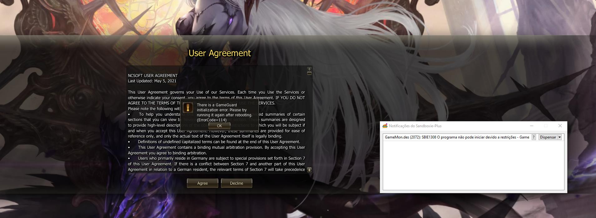
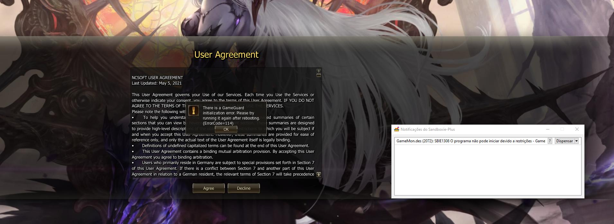

can someone help me ?
Posted: Fri Mar 04, 2022 1:06 pm
I've been playing a game for over 10 years and I've always used Sand Box, now the game company is making it difficult to use the sanbox, it always gives an error in the game and the game is closed, could you help me or update the Sandbox so that there are no problems in the match ?

THX !
game name: Lineage II

THX !